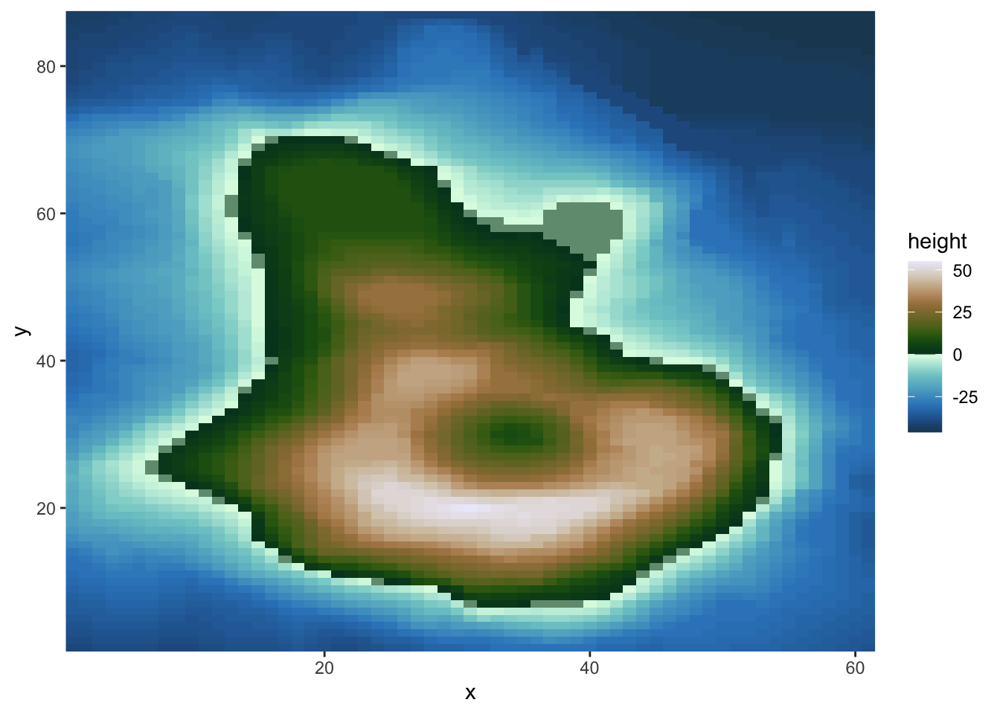
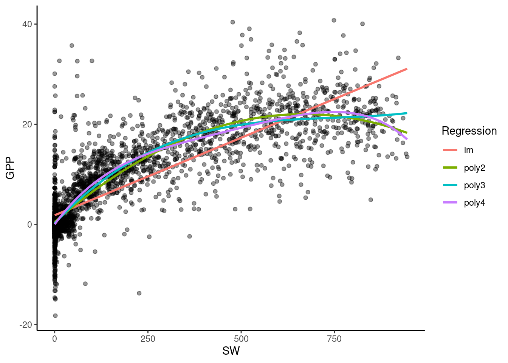
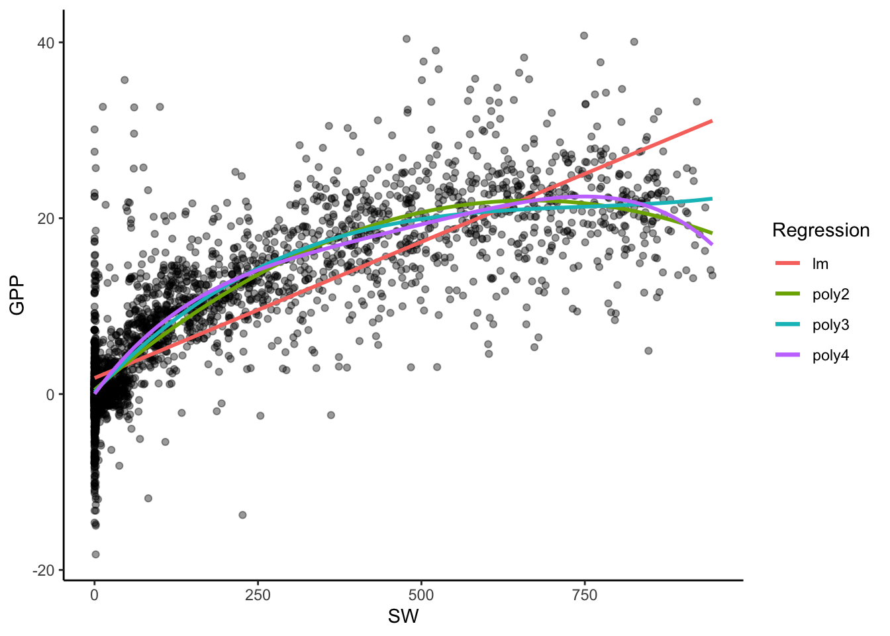
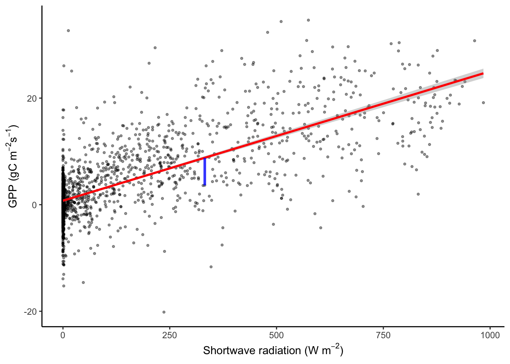
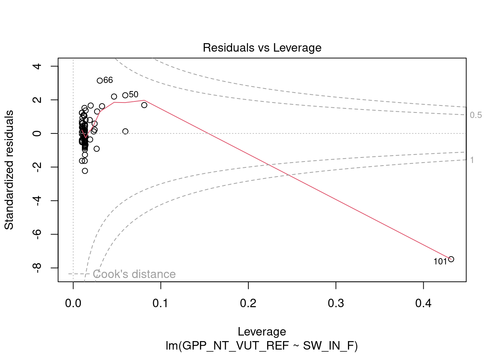
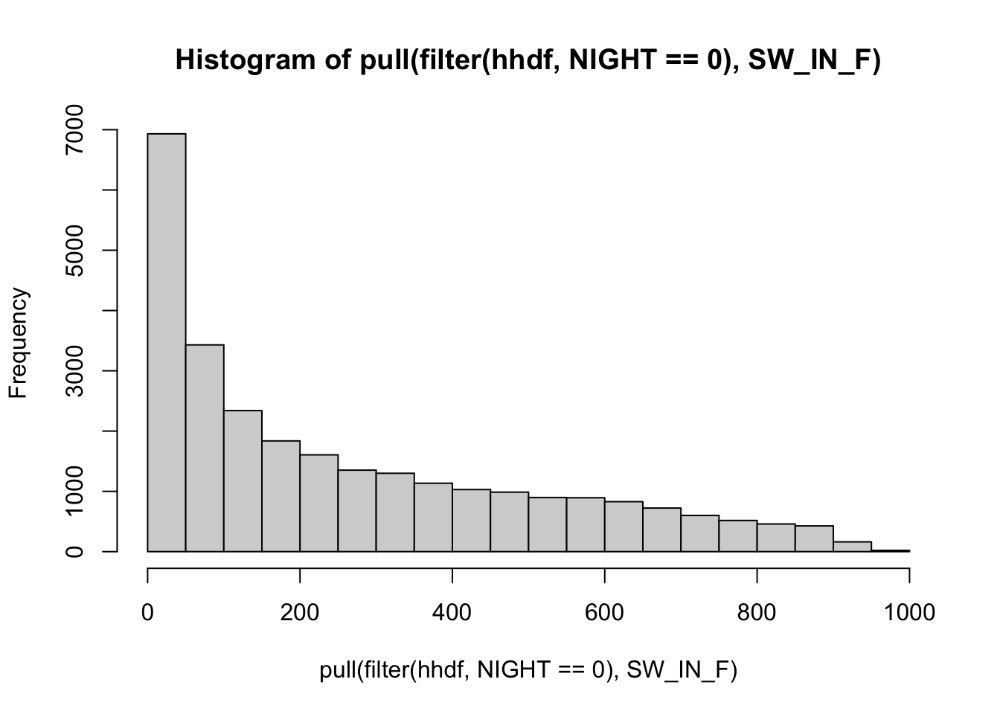
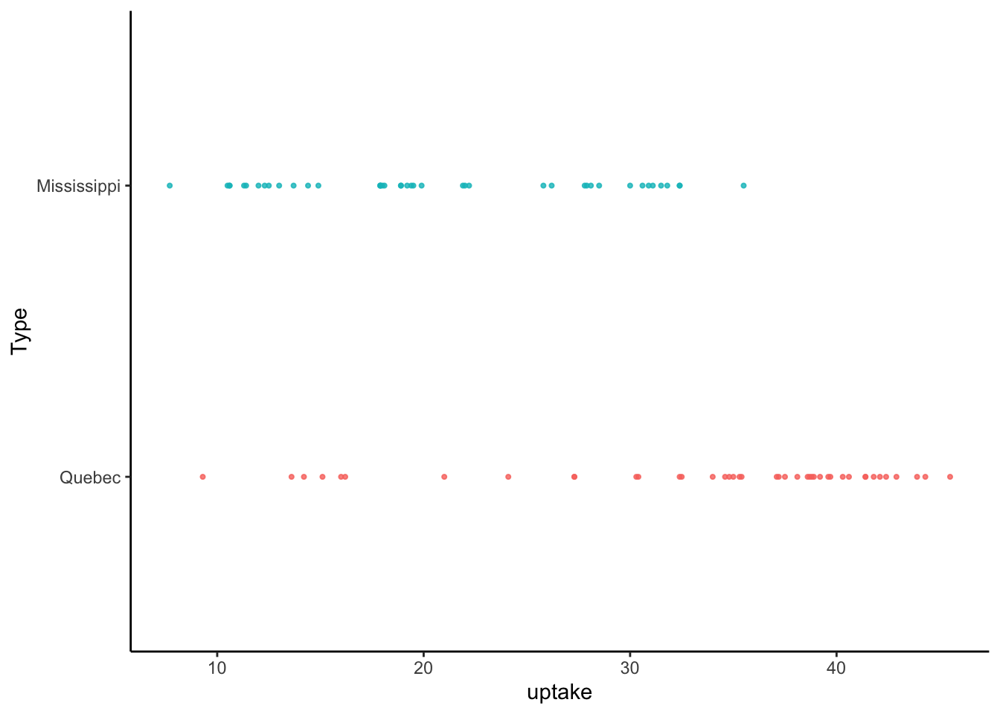
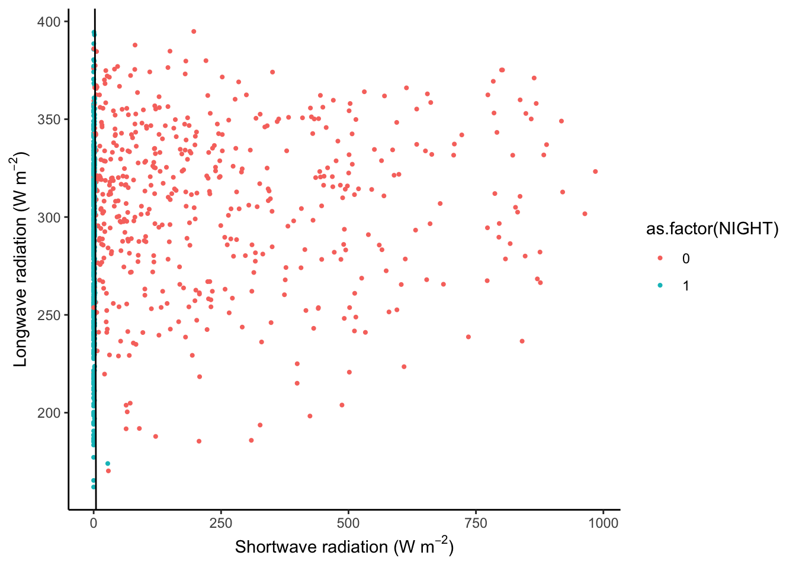

Chapter 8 Regression and classification
Chapter lead author: Pepa Aran
8.1 Learning objectives
After completing this tutorial, you will be able to:
- Understand the basics of regression and classification models
- Fit linear and logistic regression models in R
- Choose and calculate relevant model performance metrics
- Evaluate and compare regression models
- Detect data outliers
- Select best predictive variables
Contents of this Chapter are inspired and partly adopted by the excellent book Hands-On Machine Learning in R by Boehmke & Greenwell.
8.2 Tutorial
8.2.1 Types of models
Models try to explain relationships between variables through a mathematical formulation, particularly to predict a given target variable using other explanatory variables, also called predictors. Generally, we say that the target variable \(Y\) is a function (denoted \(f\)) of a set of explanatory variables \(X_1, X_2, \dots, X_p\) and some model parameters \(\beta\). Models can be represented as: \[Y \sim f(X_1, X_2, \dots, X_p, \beta)\]
This is a very general notation and depending on the structure of these components, we get to different modelling approaches.
The first distinction comes from the type of target variable. Whenever \(Y\) is a continuous variable, we are facing a regression problem. If \(Y\) is categorical, we talk about classification.
| Regression | Classification | |
|---|---|---|
| Target variable | Continuous | Categorical |
| Common models | Linear regression, polynomial regression, KNN, tree-based regression | Logistic regression, KNN, SVM, tree classifiers |
| Metrics | RMSE, \(R^2\), adjusted \(R^2\), AIC, BIC | Accuracy, precision, AUC, F1 |
8.2.2 Regression
In this section, we will introduce the most basic regression model: linear regression. We’ll explain how to fit the model with R, how to include categorical predictors and polynomial terms. Finally, several performance metrics for regression models are presented.
8.2.2.1 Linear regression
Theory
Let’s start with the simplest model: linear regression. You probably have studied linear regression from a statistical perspective, here we will take a data-fitting approach.
For example, we can try to explain the relationship between GPP and short wave radiation, like in the Chapter 4. The figure below shows a cloud of data points, and a straight line predicting GPP based on observed shortwave radiation values.
# read and format data from Ch 3
half_hourly_fluxes <- readr::read_csv("./data/FLX_CH-Lae_FLUXNET2015_FULLSET_HH_2004-2006_CLEAN.csv")
set.seed(2023)
plot_1 <- half_hourly_fluxes |>
sample_n(2000) |> # to reduce the dataset
ggplot(aes(x = SW_IN_F, y = GPP_NT_VUT_REF)) +
geom_point(size = 0.75, alpha=0.4) +
geom_smooth(method = "lm", color = "red") +
labs(x = expression(paste("Shortwave radiation (W m"^-2, ")")),
y = expression(paste("GPP (gC m"^-2, "s"^-1, ")"))) +
theme_classic()
segment_points <- data.frame(x0 = 332, y0 = 3.65, y_regr = 8.77)
plot_1 +
geom_segment(aes(x = x0, y = y0, xend = x0, yend = y_regr),
data = segment_points,
color = "blue", lwd = 1.2, alpha = 0.8)
We want to find the best straight line that approximates a cloud of data points. For this, we assume a linear relationship between a single explanatory variable \(X\) and our target \(Y\): \[ Y_i \sim \beta_0 + \beta_1 X_i, \;\;\; i = 1, 2, ...n \;, \] where \(Y_i\) is the i-th observation of the target variable, and \(X_i\) is the i-th value of the (single) predictor variable. \(n\) is the number of observations we have and \(\beta_0\) and \(\beta_1\) are constant coefficients (model parameters). We call \(\beta_0\) the intercept and \(\beta_1\) the slope of the regression line. Generally, \(\hat{Y}\) denotes the model prediction.
Fitting a linear regression is finding the values for \(\beta_0\) and \(\beta_1\) such that, on average over all points, the distance between the line at \(X_i\), that is \(\beta_0 + \beta_1 X_i\) (blue segment in the plot above), and the observed value \(Y_i\), is as small as possible. Mathematically, this is minimizing the sum of the square errors, that is: \[ \min_{\beta_0, \beta_1} \sum_i (Y_i - \beta_0 - \beta_1 X_i)^2 . \] This linear model can be used to make predictions on new data, which are obtained by \(\hat{Y}_\text{new} = \beta_0 + \beta_1 X_\text{new}\). When the new data comes from the same distribution as the data used to fit the regression line, this should be a good prediction.
It’s not hard to imagine that the univariate linear regression can be generalized to a multivariate linear regression, where we assume that the target variable is a linear combination of \(p\) predictor variables: \[Y \sim \beta_0 + \beta_1 X_1 + \beta_2 X_2 + \; ... \; + \beta_p X_p \;.\] Note that here, \(X_1, \dots, X_p\) and \(Y\) are vectors of length corresponding to the number of observations in our data set (\(n\) - as above). Analogously, calibrating the \(p+1\) coefficients \(\beta_0, \beta_1, \beta_2, ..., \beta_p\) is to minimize the sum of square errors \(\min_{\beta} \sum_i (Y_i - \hat{Y}_i)^2\).
While the regression is a line in two-dimensional space for the univariate case, it is a plane in three-dimensional space for bi-variate regression, and hyperplanes in higher dimensions.
Implementation in R
To fit a univariate linear regression model in R, we can use the lm()
function. Already in Chapter 3, we created linear
models by doing:
# numerical variables only, remove NA
df <- half_hourly_fluxes |>
dplyr::select(-starts_with("TIMESTAMP")) |>
tidyr::drop_na()
# fit univariate linear regression
linmod1 <- lm(GPP_NT_VUT_REF ~ SW_IN_F, data = df)Here, GPP_NT_VUT_REF is \(Y\), and SW_IN_F is \(X\). We can include
multiple predictors for a multivariate regression, for example as:
# fit multivariate linear regression
linmod2 <- lm(GPP_NT_VUT_REF ~ SW_IN_F + VPD_F + TA_F, data = df)or all available features in our data set (all columns other than
GPP_NT_VUT_REF in df) as:
linmod3 <- lm(GPP_NT_VUT_REF ~ ., data = df)linmod* is now a model object of class "lm". It is a list containing
the following components:
ls(linmod1)## [1] "assign" "call" "coefficients" "df.residual"
## [5] "effects" "fitted.values" "model" "qr"
## [9] "rank" "residuals" "terms" "xlevels"Enter ?lm in the console for a complete documentation of these
components and other details of the linear model implementation.
R offers a set of generic functions that work with this type of object. The following returns a human-readable report of the fit. Here the residuals are the difference between the observed target values and the predicted values.
summary(linmod1)##
## Call:
## lm(formula = GPP_NT_VUT_REF ~ SW_IN_F, data = df)
##
## Residuals:
## Min 1Q Median 3Q Max
## -38.699 -2.092 -0.406 1.893 35.153
##
## Coefficients:
## Estimate Std. Error t value Pr(>|t|)
## (Intercept) 0.8732273 0.0285896 30.54 <2e-16 ***
## SW_IN_F 0.0255041 0.0001129 225.82 <2e-16 ***
## ---
## Signif. codes: 0 '***' 0.001 '**' 0.01 '*' 0.05 '.' 0.1 ' ' 1
##
## Residual standard error: 5.007 on 41299 degrees of freedom
## Multiple R-squared: 0.5525, Adjusted R-squared: 0.5525
## F-statistic: 5.099e+04 on 1 and 41299 DF, p-value: < 2.2e-16We can also extract coefficients \(\beta\) with
coef(linmod1)## (Intercept) SW_IN_F
## 0.87322728 0.02550413and the residual sum of squares (which we wanted to minimize) with
sum(residuals(linmod1)^2)## [1] 1035309Although summary() provides a nice, human-readable output, you may
find it unpractical to work with. A set of relevant statistical
quantities are returned in a tidy format using tidy() from the broom
package:
broom::tidy(linmod1)## # A tibble: 2 × 5
## term estimate std.error statistic p.value
## <chr> <dbl> <dbl> <dbl> <dbl>
## 1 (Intercept) 0.873 0.0286 30.5 1.25e-202
## 2 SW_IN_F 0.0255 0.000113 226. 0Model advantages and concerns
An advantage of linear regression is that the coefficients provide
information that is straight-forward to interpret. We’ve seen above,
that GPP_NT_VUT_REF increases by 0.0255 for a unit increase in
SW_IN_F. Of course, the units of the coefficients depend on the units
of GPP_NT_VUT_REF and SW_IN_F. This has the advantage that the data
does not need to be normalised. That is, a linear regression model with
the same predictive skills can be found, irrespective of whether
GPP_NT_VUT_REF is given in g C m\(^{-2}\)s\(^{-1}\) or in kg C
m\(^{-2}\)s\(^{-1}\).
Another advantage of linear regression is that it’s much less prone to overfit than other algorithms. You’ll learn more about the concept of overfitting in Chapter 9. Not being prone to overfitting can also be a disadvantage: linear regression models are often not flexible enough to be effectively fit to the data. They are also not able to capture non-linearities in the observed relationship and, as we’ll see later in this chapter, it exhibits a poorer performance than more complex models (e.g. polynomial regression) also on the validation data set.
A further limitation is that least squares regression requires \(n>p\). In words: the number of observations must be greater than the number of predictors. If this is not given, one can resort to step-wise forward regression, where predictors are sequentially added based on which predictor adds the most additional information at each step.
When multiple predictors are linearly correlated, then linear regression cannot discern individual effects and individual predictors may appear statistically insignificant when they would be significant if covarying predictors were not included in the model. Such instability can get propagated to predictions. Again, stepwise regression can be used to remedy this problem. However, when one predictor covaries with multiple other predictors, this may not work. For many applications in Geography and Environmental Sciences, we deal with limited numbers of predictors. We can use our own knowledge to examine potentially problematic covariations and make an informed pre-selection rather than throwing all predictors we can possibly think of at our models. Such a pre-selection can be guided by the model performance on a validation data set (more on that below).
An alternative strategy is to use dimension reduction methods. Principal Component regression reduces the data to capture only the complementary axes along which our data varies and therefore collapses covarying predictors into a single one that represents their common axis of variation. Partial Least Squares regression works similarly but modifies the principal components so that they are maximally correlated to the target variable. You can read more on their implementation in R here.
8.2.2.2 Regression on categorical variables
In the regression within categories section of Chapter 4, we saw that when we separate the data into sub-plots, hidden patterns emerge. This information is very relevant for modeling, because it can be included in our regression model. It is crucial to spend enough time exploring the data before you start modeling, because it helps to understand the fit and output of the model, but also to create models that capture the relationships between variables better.
# create month category
df_cat <- half_hourly_fluxes |>
mutate(MONTH = lubridate::month(TIMESTAMP_START)) |>
tidyr::drop_na() |>
dplyr::select(MONTH, GPP_NT_VUT_REF, SW_IN_F)So far, we have only used continuous variables as explanatory variables
in a linear regression. It is also possible to use categorical
variables. To do this in R, such variables cannot be of class numeric,
otherwise the lm() function treats them as continuous variables. For
example, although the variable NIGHT is categorical with values 0
and 1, the model linmod3 treats it as a number. We must make sure
that categorical variables have class character or, even better,
factor.
# fix class of categorical variables
df_cat <- df_cat |>
mutate(MONTH = as.factor(MONTH))Now we can fit the linear model again:
linmod_cat <- lm(GPP_NT_VUT_REF ~ MONTH + SW_IN_F, data = df_cat)
summary(linmod_cat)##
## Call:
## lm(formula = GPP_NT_VUT_REF ~ MONTH + SW_IN_F, data = df_cat)
##
## Residuals:
## Min 1Q Median 3Q Max
## -36.212 -2.346 -0.223 2.200 34.416
##
## Coefficients:
## Estimate Std. Error t value Pr(>|t|)
## (Intercept) 1.6146109 0.0893693 18.067 < 2e-16 ***
## MONTH2 -1.8105447 0.1294675 -13.985 < 2e-16 ***
## MONTH3 -2.8800172 0.1264177 -22.782 < 2e-16 ***
## MONTH4 -2.5667281 0.1278097 -20.082 < 2e-16 ***
## MONTH5 -0.0288745 0.1273491 -0.227 0.820631
## MONTH6 0.4614556 0.1298069 3.555 0.000378 ***
## MONTH7 0.1697514 0.1283830 1.322 0.186100
## MONTH8 1.2942463 0.1231252 10.512 < 2e-16 ***
## MONTH9 0.5140562 0.1165474 4.411 1.03e-05 ***
## MONTH10 -0.4807082 0.1152536 -4.171 3.04e-05 ***
## MONTH11 -1.3370277 0.1159059 -11.535 < 2e-16 ***
## MONTH12 -1.2634451 0.1151530 -10.972 < 2e-16 ***
## SW_IN_F 0.0246420 0.0001169 210.810 < 2e-16 ***
## ---
## Signif. codes: 0 '***' 0.001 '**' 0.01 '*' 0.05 '.' 0.1 ' ' 1
##
## Residual standard error: 4.865 on 41288 degrees of freedom
## Multiple R-squared: 0.5776, Adjusted R-squared: 0.5775
## F-statistic: 4704 on 12 and 41288 DF, p-value: < 2.2e-16In the fit summary, you can observe that, there are MONTH2 to
MONTH12 parameters. MONTH is a factor which can take 12 different
values: 1 to 12. lm() uses one of the factor level as the
reference, in this case 1, and fits an intercept for the other
categories. The result is a set of parallel regression lines, one for
each different month.
df_cat |>
mutate(MONTH_NAME = lubridate::month(as.integer(MONTH), label = TRUE)) |>
ggplot(aes(x = SW_IN_F, y = GPP_NT_VUT_REF)) +
geom_point(alpha = 0.2) +
geom_smooth(formula = y ~ x + 0, method = "lm", color = "red", se = FALSE) +
labs(x = "SW", y = "GPP") +
facet_wrap(~MONTH_NAME) +
theme_classic()
In the grid image, we can observe that GPP does not increase with SW at
the same rate every month. For example, the increase in GPP is less
steep in February than in September. To model this, we should consider a
variable slope parameter for each month or category. In R, this is
implemented by including an interaction term MONTH:SW_IN_F in the
regression formula, like this:
linmod_inter <- lm(GPP_NT_VUT_REF ~ MONTH + SW_IN_F + MONTH:SW_IN_F, data = df_cat)
# equivalently: lm(GPP_NT_VUT_REF ~ MONTH * SW_IN_F, data = df_cat)
summary(linmod_inter)##
## Call:
## lm(formula = GPP_NT_VUT_REF ~ MONTH + SW_IN_F + MONTH:SW_IN_F,
## data = df_cat)
##
## Residuals:
## Min 1Q Median 3Q Max
## -28.891 -2.113 -0.420 1.892 34.029
##
## Coefficients:
## Estimate Std. Error t value Pr(>|t|)
## (Intercept) 2.0449603 0.0944991 21.640 < 2e-16 ***
## MONTH2 -1.5386938 0.1369424 -11.236 < 2e-16 ***
## MONTH3 -1.5249304 0.1365863 -11.165 < 2e-16 ***
## MONTH4 -1.0050639 0.1396023 -7.199 6.15e-13 ***
## MONTH5 -0.4502367 0.1412720 -3.187 0.00144 **
## MONTH6 -1.2559057 0.1474257 -8.519 < 2e-16 ***
## MONTH7 -0.8440097 0.1446838 -5.833 5.47e-09 ***
## MONTH8 -0.2188300 0.1346734 -1.625 0.10419
## MONTH9 -1.3407190 0.1269387 -10.562 < 2e-16 ***
## MONTH10 -0.9991456 0.1235627 -8.086 6.32e-16 ***
## MONTH11 -1.2124373 0.1230946 -9.850 < 2e-16 ***
## MONTH12 -1.0724209 0.1210819 -8.857 < 2e-16 ***
## SW_IN_F 0.0158600 0.0008758 18.110 < 2e-16 ***
## MONTH2:SW_IN_F -0.0030373 0.0011518 -2.637 0.00837 **
## MONTH3:SW_IN_F -0.0058229 0.0009713 -5.995 2.05e-09 ***
## MONTH4:SW_IN_F -0.0038333 0.0009469 -4.048 5.17e-05 ***
## MONTH5:SW_IN_F 0.0087370 0.0009305 9.389 < 2e-16 ***
## MONTH6:SW_IN_F 0.0135219 0.0009172 14.743 < 2e-16 ***
## MONTH7:SW_IN_F 0.0110791 0.0009182 12.066 < 2e-16 ***
## MONTH8:SW_IN_F 0.0151014 0.0009317 16.209 < 2e-16 ***
## MONTH9:SW_IN_F 0.0180496 0.0009297 19.415 < 2e-16 ***
## MONTH10:SW_IN_F 0.0097277 0.0009761 9.966 < 2e-16 ***
## MONTH11:SW_IN_F -0.0011415 0.0010932 -1.044 0.29640
## MONTH12:SW_IN_F -0.0099745 0.0012972 -7.689 1.52e-14 ***
## ---
## Signif. codes: 0 '***' 0.001 '**' 0.01 '*' 0.05 '.' 0.1 ' ' 1
##
## Residual standard error: 4.593 on 41277 degrees of freedom
## Multiple R-squared: 0.6237, Adjusted R-squared: 0.6234
## F-statistic: 2974 on 23 and 41277 DF, p-value: < 2.2e-168.2.2.3 Polynomial regression
Furthermore, the relationships between variables may be non-linear. In the previous example, we see that the increase in GPP saturates as shortwave radiation grows, which suggests that the true relationship could be represented by a curve. There are many regression methods that fit this kind of relationship, like polynomial regression, LOESS (local polynomial regression fitting), etc.
Let’s fit a simple quadratic regression model, just for the month of
August. For this we use the poly() function which constructs
orthogonal polynomials of a given degree:
quadmod <- lm(GPP_NT_VUT_REF ~ poly(SW_IN_F, 2),
data = df_cat |>
filter(MONTH == 8))
summary(quadmod)##
## Call:
## lm(formula = GPP_NT_VUT_REF ~ poly(SW_IN_F, 2), data = filter(df_cat,
## MONTH == 8))
##
## Residuals:
## Min 1Q Median 3Q Max
## -26.367 -2.055 -0.253 1.801 32.375
##
## Coefficients:
## Estimate Std. Error t value Pr(>|t|)
## (Intercept) 7.13084 0.07944 89.77 <2e-16 ***
## poly(SW_IN_F, 2)1 447.25113 4.61907 96.83 <2e-16 ***
## poly(SW_IN_F, 2)2 -151.08797 4.61907 -32.71 <2e-16 ***
## ---
## Signif. codes: 0 '***' 0.001 '**' 0.01 '*' 0.05 '.' 0.1 ' ' 1
##
## Residual standard error: 4.619 on 3378 degrees of freedom
## Multiple R-squared: 0.7556, Adjusted R-squared: 0.7555
## F-statistic: 5223 on 2 and 3378 DF, p-value: < 2.2e-16In the following plot, you can see how the model fit for GPP in August improves as we consider higher degree polynomials:
df_cat |>
filter(MONTH == 8) |>
ggplot(aes(x = SW_IN_F, y = GPP_NT_VUT_REF)) +
geom_point(alpha = 0.4) +
geom_smooth(formula = y ~ x, method = "lm", aes(color = "lm"), se = FALSE) +
geom_smooth(formula = y ~ poly(x, 2), method = "lm",
aes(color = "poly2"), se = FALSE) +
geom_smooth(formula = y ~ poly(x, 3), method = "lm",
aes(color = "poly3"), se = FALSE) +
geom_smooth(formula = y ~ poly(x, 4), method = "lm",
aes(color = "poly4"), se = FALSE) +
labs(x = "SW", y = "GPP", color = "Regression") +
theme_classic()
8.2.2.4 Metrics for regression evaluation
Metrics measure the quality of fit between predicted and observed values, are essential to model training (where the metric defines the loss function, see Chapter 10), and inform model evaluation. Different metrics measure different aspects of the model-data agreement. In other words, a single metric never captures all aspects and patterns of the model-data agreement. Therefore, a visual inspection of the model fit is always a good start of the model evaluation.
To get an intuitive understanding of the different abilities of different metrics, compare the scatterplots in Fig. 8.1 and how different aspects of the model-data agreement are measured by different metrics. The observed target values \(y\) are plotted against the predicted values \(\hat{y}\) from a regression model, and the dashed line represents the ideal scenario: our predictions matching the data perfectly. Definitions of the metrics displayed and other metrics are given below.

Figure 8.1: Correlation plots between observed and fitted target values.
Common metrics used for evaluating regression fits are:
MSE
The mean squared error is defined, as its name suggests, as: \[ \text{MSE} = \frac{1}{n} \sum_{i=1}^n (Y_i - \hat{Y_i})^2 \]It measures the magnitude of the errors, and is minimized to fit a linear regression or, as we will see in Chapter 9, during model training when used as a loss function. Note that since it scales with the square of the errors, the MSE is sensitive to large errors in single points, including outliers.
RMSE
The root mean squared error is, as its name suggests, the root of the MSE: \[ \text{RMSE} = \sqrt{\text{MSE}} = \sqrt{\frac{1}{n} \sum_{i=1}^n (Y_i - \hat{Y_i})^2} \]Like the MSE, the RMSE also measures the magnitude of the errors and is minimized during model training. By taking the square root of mean square errors, the RMSE is in the same units as the data \(Y\) and is less sensitive to outliers than the MSE.
MAE
The mean absolute error is similarly defined: \[ \text{MAE} = \frac{1}{n} \sum_{i = 1}^{n} |Y_i - \hat{Y_i}| \] Measuring the discrepancies between predictions and observations using absolute errors, instead of squared errors, gives less importance to errors of large magnitude and more importance to small errors than the MSE would. Hence, this measures is more stable in the presence of outliers.
\(R^2\) - coefficient of determination
describes the proportion of variation in \(y\) that is captured by modelled values \(\hat{y_i}\). It tells us how much better our fitted values \(\hat{y_i}\) are than just taking the average of the target \(\bar{y}\) as predictions. In this case, the goal is to maximize the metric, thus trying the explain as much variation as possible. In contrast to the MSE and RMSE, \(R^2\) measures consistency, or correlation, or goodness of fit. It is defined as: \[ R^2 = 1 - \frac{\sum_i (\hat{Y}_i - Y_i)^2}{\sum_i (Y_i - \bar{Y})^2}\\ \] When the regression model is fitted by minimizing the MSE, the \(R^2\) takes values between 0 and 1. A perfect fit is quantified by \(R^2 = 1\). There is no generally valid threshold of \(R^2\) for a model to be considered “good”. It depends on the application and the nature of the data and the data-generating process. Note that the above equation can also be written as \(R^2 = 1 - \text{MSE}/var(Y)\).
\(r\) - Pearson’s correlation
The linear association between two variables (here \(y\) and \(\hat{y}\)) is measured by the Pearson’s correlation coefficient \(r\). \[ r = \frac{\sum_i (Y_i - \bar{Y}) (\hat{Y_i} - \bar{\hat{Y}}) }{\sqrt{ \sum_i(Y_i-\bar{Y})^2 \; (\hat{Y_i}-\bar{\hat{Y}})^2 } } \]
The correlation calculated between the target \(Y\) and a predictor \(X\) can tell us about the predictive power of \(X\) in a linear regression model (the higher the correlation, the more powerful). We can also compute the correlation between the target \(Y\) and the predicted values \(\hat{Y}\) by a model (multivariate, or even not linear) to assess the adequacy of the model chosen. See Figure 8.1 as an example. It is noteworthy to mention that correlation is location and scale invariant, hence it will not detect model deviations like the ones in the middle row plots.
The squared value of the Pearson’s r is often reported as “\(R^2\)” but doesn’t correspond to the definition of the coefficient of determination given above. However, the square of the Pearson’s r is closely related to the coefficient of determination \(R^2\). For a linear regression, fitted minimizing the MSE, they are identical (see proof here). In subsequent chapters, we will use “\(R^2\)” to refer to the square of the Pearson’s r between the observed \(Y\) and predicted \(\hat{Y}\) values.
Note the implementations in R.The \(R^2\) reported by the generic
summary()function corresponds to the base-R functioncor()^2, toyardstick::rsq(), and to the definition of the square of the Pearson’s \(r\) given above. Theyardstick::rsq_trad()returns the coefficient of determination as traditionally defined and is not equal to the values above, unless computed on the predicted values \(\hat{y}\).
Sometimes the Person’s version is computed between \(y\) and \(x\), and it leads to the same number due to its “location and scale invariant” property. Nevertheless, this is conceptually wrong, as we should look at the predictions, not the predictors: We are not predicting \(y\) by just giving the values of \(x\) instead. Hence, especially when using {yardstick} functions, make sure you compute the values on \(\hat{y}\). When we have several predictors, it’s already clear that we should compare \(y\) to \(\hat{y}\) instead of \(y\) to each predictor separately.
# generate correlated random data
set.seed(1982)
df <- tibble(x = rnorm(100)) |>
mutate(y = x + rnorm(100)) |>
mutate(y_fitted = lm(y ~ x)$fitted.values)
# implementations using Pearson's correlation
summary(lm(y ~ x, data = df))$r.squared## [1] 0.6186521cor(df$y, df$x)^2 # remember: location and scale invariant## [1] 0.6186521yardstick::rsq(df, y, x) |> pull(.estimate)## [1] 0.6186521(sum((df$x - mean(df$x))*(df$y - mean(df$y))))^2/
(sum((df$y - mean(df$y))^2)*sum((df$x - mean(df$x))^2))## [1] 0.6186521# implementations using coefficient of determination definition
1 - sum((df$x - df$y)^2) / sum((df$y - mean(df$y))^2) # should be \hat{y}, not x## [1] 0.5993324yardstick::rsq_trad(df, y, x) |> pull(.estimate) # incorrect## [1] 0.5993324yardstick::rsq_trad(df, y, y_fitted) |> pull(.estimate) # correct## [1] 0.6186521An “\(R^2\)” is commonly reported when evaluating the agreement between observed and predicted values of a given model. When the correlation between two different variables in a sample is quantified, \(r\) is commonly used to reflect also whether the correlation is positive or negative (\(r\) can attain positive or negative values in the interval \([-1, 1]\)). The coefficient of determination can return negative values when comparing observed and predicted values for uninformative estimates (worse than just using the average of \(Y\)) and is thus not actually bound between 0 and 1. Therefore, be careful with the interpreration of “\(R^2\)” and think on which variables it was computed and with which method.
Bias
The bias is simply the mean error: \[ \text{Bias} = \frac{1}{n} \sum_i^n{(\hat{Y}_i - Y_i)} \]
Slope
The slope refers to the slope of the linear regression line between predicted and observed values. It is returned as the second element of the vector returned by coef(lm(..)):
coef(lm(y ~ y_fitted, data = df))[2]## y_fitted
## 18.2.2.5 Metrics for regression model comparison
In general, the aim of regression modelling is to find a model that best explains the data - but not the random errors in the data. More complex models tend to overfit more than simpler models. The implication of overfitting is that the model fits the data used for model fitting well, but doesn’t fit well when evaluating the predictions of the same model to new data (data not used for model fitting). In such a case, the model’s generalisability is poor. We’ll learn more about overfitting and generalisability in the context of supervised machine learning in later chapters. Often, simpler models generalise better than more complex model. The challenge is to strike a balance between complexity and generalisability. But how to find the “sweet spot” of this trade-off?
In this context it should be noted that the \(R^2\) always increases when predictors are added to a model. Therefore, the \(R^2\) is not a suitable metric for comparing models that differ with respect to their number of predictors - a factor controlling model complexity. Cross-validation can be regarded as the “gold-standard” for measuring model generalisability if the data is plentiful. It will be introduced in the context of supervised machine learning in Chapter 10. However, when the data size is small, cross validation estimates may not be robust. Without resorting to cross validation, the effect of spuriously improving the evaluation metric by adding uninformative predictors can also be mitigated by penalizing the number of predictors \(p\). Different metrics are available:
Adjusted \(R^2\)
The adjusted \(R^2\) discounts values of \(R^2\) by the number of predictors. It is defined as \[ {R}^2_{adj} = 1 - (1-R^2) \; \frac{n-1}{n-p-1} \;, \] where \(n\) (as before) is the number of observations, \(p\) the number of parameters and \(R^2\) the usual coefficient of determination. Same as for \(R^2\), the goal is to maximize \(R^2_{adj}\).
AIC
The Akaike’s Information Criterion is defined in terms of log-likelihood (covered in Quantitative Methoden) but for linear regression it can be written as: \[ \text{AIC} = n \log \Big(\frac{\text{SSE}}{n}\Big) + 2(p+2) \] where \(n\) is the number of observations used for estimation, \(p\) is the number of explanatory variables in the model and SSE is the sum of squared errors (SSE\(= \sum_i (Y_i-\hat{Y_i})^2\)). Also in this case we have to minimize it and the model with the minimum value of the AIC is often the best model for forecasting. Since it penalizes having many parameters, it will favor less complex models.
AIC\(_c\)
For small values of \(n\) the AIC tends to select too many predictors. A bias-corrected version of the AIC is defined as: \[ \text{AIC}_c = \text{AIC} + \frac{2(p + 2)(p + 3)}{n-p-3} \] Also AIC\(_c\) is minimized for an optimal predictive model.
BIC
The Schwarz’s Bayesian Information Criterion is defined as \[ \text{BIC} = n \log \Big(\frac{\text{SSE}}{n}\Big) + (p+2) \log(n) \] Also for BIC, the goal is to minimize it. This metric has the feature that if there is a true underlying model, the BIC will select that model given enough data. The BIC tends to select a model with fewer predictors than AIC.
Implementation in R
Let’s calculate the metrics introduced above for a few of the fitted
regression models. Some of these metrics, like \(R^2\) and \(R^2_{adj}\) are
given by the summary() function. Alternatively, the {yardstick}
package provides implementations for a few of these metrics, which we
compute below:
compute_regr_metrics <- function(mod){
p <- length(mod$coefficients)
n <- length(mod$residuals)
tibble(
mse = mean(mod$residuals^2),
R2 = summary(mod)$r.squared,
R2_adj = summary(mod)$adj.r.squared,
AIC = extractAIC(mod)[2],
AIC_adj = extractAIC(mod)[2] + 2*(p+2)*(p+3)/(n-p-3),
BIC = BIC(mod) # this implementation is based on log-likelihood
)
}
list_metrics <- purrr::map(
list(linmod1, linmod2, linmod_cat, quadmod),
~compute_regr_metrics(.))
names(list_metrics) <- c("Linear model",
"Linear model 2",
"Linear + categories",
"Quadratic model")
bind_rows(list_metrics, .id = "type")## # A tibble: 4 × 7
## type mse R2 R2_adj AIC AIC_adj BIC
## <chr> <dbl> <dbl> <dbl> <dbl> <dbl> <dbl>
## 1 Linear model 25.1 0.553 0.553 133058. 133058. 250293.
## 2 Linear model 2 24.8 0.558 0.558 132590. 132590. 249842.
## 3 Linear + categories 23.7 0.578 0.577 130700. 130700. 248030.
## 4 Quadratic model 21.3 0.756 0.755 10350. 10350. 19972.8.2.3 Classification
Classification models predict a categorical target variable. Note that
predictors may be continuous. We will introduce a classification problem
with a binary target, since it’s straightforward to generalize to
categorical variables with more than two classes. As an example, let’s
observe the CO2 dataset from the {datasets}
package,
which contains data from an experiment on the cold tolerance of a grass
species. We will try to classify the origin of each plant (categorical
variable Type with values Quebec or Mississippi) depending on the
carbon dioxide uptake rate of the plant (continuous variable uptake
measured in \(\mu\)mol m\(^{-2}\)s\(^{-1}\)). More information on the dataset can be obtained by typing ?datasets::CO2 in the console.
plot_2 <- datasets::CO2 |>
ggplot(aes(x = uptake, y = Type, color = Type)) +
geom_point(size = 0.75, alpha = 0.8) +
theme_classic() +
theme(legend.position = "none")
plot_2
At first sight, it’s easy to see that the carbon uptake is lower for the Mississippi type. Note that other predictors can be included in the model, but we’ll focus on a single predictor. Using this example, we’ll cover logistic regression, its implementation in R and metrics for classification.
8.2.3.1 Logistic regression
Theory
A classification problem is a bit more difficult to write mathematically
than a regression problem. Before, the mathematical representation of
GPP_NT_VUT_REF ~ SW_IN_F was
GPP_NT_VUT_REF\(\;=\; \beta_0 + \beta_1\)SW_IN_F. With the
classification model Type ~ uptake, we cannot just write
Type\(\;=\; \beta_0 + \beta_1\)uptake because Type is not a number.
Hence, the categorical variable must be encoded, in this case 0
represents Quebec and 1 represents Mississippi.
The next issue is that a linear model makes continuous predictions in the entire real numbers space \((-\inf, \inf)\), but we want the predictions to be either 0 or 1. We can transform these values to be in the interval \([0,1]\) with a link function. For a binary response, it’s common to use a logit link function: \[\text{logit}(z) = \frac{\exp(z)}{1+\exp(z)}.\]
curve(exp(x)/(1+exp(x)), -5, 5, ylab = "logit(x)")
Combining a linear model (with any type of predictors, like for
regression) and a logit link function, we arrive to a logistic
regression model:
\[f(X, \beta) = \text{logit}(\beta_0 + \beta_1 X_1 + ... + \beta_p X_p) = \frac{\exp(\beta_0 + \beta_1 X_1 + ... + \beta_p X_p)}{1 + \exp(\beta_0 + \beta_1 X_1 + ... + \beta_p X_p)}.\]
This predicted value can be understood as the probability of belonging
to class 1 (in our example, Mississippi). A classification rule is
defined such that an observation \(X_{new}\) with a predicted probability
of belonging to class 1 higher than a given threshold \(\tau\) (i.e.
\(f(X_{new}, \beta) > \tau\)) will be classified as 1; and if the
predicted probability is smaller than the threshold, it will be
classified as 0.
A logistic regression model results in a linear classification rule. This means that the \(p\)-dimensional space will be divided in two by a hyperplane, and the points falling in each side of the hyperplane will be classified as 1 or 0. In the example above with carbon uptake as predictor, the classification boundary would be a point dividing the real line. If we include a second predictor, we would obtain a line diviting the 2-dimensional plane in two.
Furthermore, to fit a logistic regression model means to calculate the maximum likelihood estimator of \(\beta\) with an iterative algorithm. We will learn more about iterative model fitting, i.e. parameter optimization, in the context of supervised machine learning (Chapter 10).
Implementation in R
First, let’s see how the target variable is encoded. R directly loads
the dataframe with Type as a factor and Quebec as the reference
level. R factors work such that each factor level (here Quebec and
Mississippi) corresponds to an integer value (its position given by
levels(), here 1 and 2 respectively). We can fit a logistic model
in R with this encoding.
str(datasets::CO2)## Classes 'nfnGroupedData', 'nfGroupedData', 'groupedData' and 'data.frame': 84 obs. of 5 variables:
## $ Plant : Ord.factor w/ 12 levels "Qn1"<"Qn2"<"Qn3"<..: 1 1 1 1 1 1 1 2 2 2 ...
## $ Type : Factor w/ 2 levels "Quebec","Mississippi": 1 1 1 1 1 1 1 1 1 1 ...
## $ Treatment: Factor w/ 2 levels "nonchilled","chilled": 1 1 1 1 1 1 1 1 1 1 ...
## $ conc : num 95 175 250 350 500 675 1000 95 175 250 ...
## $ uptake : num 16 30.4 34.8 37.2 35.3 39.2 39.7 13.6 27.3 37.1 ...
## - attr(*, "formula")=Class 'formula' language uptake ~ conc | Plant
## .. ..- attr(*, ".Environment")=<environment: R_EmptyEnv>
## - attr(*, "outer")=Class 'formula' language ~Treatment * Type
## .. ..- attr(*, ".Environment")=<environment: R_EmptyEnv>
## - attr(*, "labels")=List of 2
## ..$ x: chr "Ambient carbon dioxide concentration"
## ..$ y: chr "CO2 uptake rate"
## - attr(*, "units")=List of 2
## ..$ x: chr "(uL/L)"
## ..$ y: chr "(umol/m^2 s)"levels(datasets::CO2$Type)## [1] "Quebec" "Mississippi"To fit a logistic regression in R we can use the glm() function, which
fits a generalized linear model, indicating that our target variable is
binary and the link function is a logit function. Let’s see the model
output:
logmod <- glm(Type ~ uptake,
family = binomial(link = logit),
data = datasets::CO2)
summary(logmod)##
## Call:
## glm(formula = Type ~ uptake, family = binomial(link = logit),
## data = datasets::CO2)
##
## Deviance Residuals:
## Min 1Q Median 3Q Max
## -2.29454 -0.66966 -0.02006 0.74112 1.68565
##
## Coefficients:
## Estimate Std. Error z value Pr(>|z|)
## (Intercept) 3.87192 0.87273 4.437 9.14e-06 ***
## uptake -0.14130 0.02992 -4.723 2.32e-06 ***
## ---
## Signif. codes: 0 '***' 0.001 '**' 0.01 '*' 0.05 '.' 0.1 ' ' 1
##
## (Dispersion parameter for binomial family taken to be 1)
##
## Null deviance: 116.449 on 83 degrees of freedom
## Residual deviance: 83.673 on 82 degrees of freedom
## AIC: 87.673
##
## Number of Fisher Scoring iterations: 4This fitted model results in a linear classification boundary (discontinued line) that splits the predictor variables space in two. Where that line falls depends on the choice of threshold, in this case \(\tau=0.5\) (see where the grey logistic regression line meets the dashed threshold line). You can see it plotted below:
beta <- coef(logmod)
# reuse previous plot with classification line
plot_2.1 <- datasets::CO2 |>
ggplot(aes(x = uptake, y = as.numeric(Type)-1, color = Type)) +
geom_point(size = 0.75, alpha = 0.8) +
ylab("") +
theme_classic() +
stat_smooth(method = "glm", color = "grey", se = FALSE,
method.args = list(family=binomial)) +
geom_vline(xintercept = -beta[1]/beta[2], lty = 2)
plot_2.1## `geom_smooth()` using formula = 'y ~ x'
Most blue points fall to one side of the dashed classification line and most red points to the other side; this is what we wanted. The points that are in the wrong side of the line are misclassified by the logistic regression model, we’re trying to minimize that.
Note that, just like for linear regression, a logistic regression model allows to use categorical explanatory variables and polynomial transformations of the predictors to achieve better-fitting classification models.
Model advantages and concerns
One advantage of logistic regression is simplicity. It’s part of the generalized linear regression family of models and the concept of a link function used to build such a model can also be used for various types of response variables (not only binary, but also count data…). You can find more details in this Wikipedia article.
Furthermore, logistic regression allows for an interesting interpretation of its model parameters: odds and log-odds. Odds represent how much likely it is to find one class versus the other (e.g. class 1 is twice as likely as class 0 whenever we have probabilities \(66\%\) vs \(33\%\)). The odds are defined as the probability of \(Y\) belonging to class 1 divided by the probabiity of belonging to class 0, and relates to the model parameters as \[\frac{P(Y_i=1)}{P(Y_i=0)} = \exp(\beta_0+\beta_1 X_i).\] So the log-odds are \[\log\left(\frac{P(Y_i=1)}{P(Y_i=0)}\right) = \beta_0+\beta_1 X_i.\] Increases in the values of the predictors affect the odds multiplicatively and the log-odds linearly.
It is easy to extend a logistic regression model to more than two classes by fitting models iteratively. For example, first you classify class 1 against classes 2 and 3; then another logistic regression classifies class 2 against 3.
Nevertheless, logistic regression relies on statistical assumptions to fit the parameters and interpret the fitted parameters. So whenever these assumptions are not met, one must be careful with the conclusions drawn. Other machine learning methods, that will be covered in Chapters 9 and 10, can also be used for classification tasks. These offer more flexibility than logistic regression (are not necessarily linear) and don’t need to satisfy strict statistical assumptions.
8.2.3.2 Metrics for classification
Measuring the quality of a classification model is based on counting how many observations were correctly classified, rather than the distance between the values predicted by a regression and the true observed values. These can be represented in a confusion matrix:
| \(Y = 1\) | \(Y = 0\) | |
|---|---|---|
| \(\hat{Y} = 1\) | True positives (TP) | False positives (FP) |
| \(\hat{Y} = 0\) | False negatives (FN) | True negatives (TN) |
In a confusion matrix, correctly classified observations are on the diagonal and off-diagonal values correspond to different types of errors. Some of these error types are more relevant for certain applications.
Imagine that you want to classify whether the water of a river is safe to drink based on measurements of certain particles or chemicals in the water (Y=1 means safe, Y=0 means unsafe). It’s much worse to tag as “safe” a polluted river than to tag as “unsafe” a potable water source, one must be conservative. In this case, we would prioritize avoiding false positives and wouldn’t care so much about false negatives.
The following metrics are widely used and highlight different aspects of our modeling goals.
- Accuracy is simply the proportion of outputs that were correctly classified: \[ \text{Accuracy}=\frac{\text{TP} + \text{TN}}{N},\] where \(N\) is the number of observations. This is a very common metric for training ML models and treats both classes as equally important. It’s naturally extended to multi-class classification and usually compared to the value \(\frac{1}{C}\) where \(C\) is the number of classes.
Classification models are usually compared to randomness: How much better is our model compared to throwing a coin for classification? At random, we would assign each class \(50\%\) of the time. So if we assume that both classes are as likely to appear, that is, they are balanced, the accuracy of a random guess would be around \(0.5\). Hence, we want the accuracy to be “better than random”. If there are \(C\) different classes and the observations are balanced, we want the accuracy to be above \(1/C\).
A challenge is posed by imbalanced classes. For a dataset where \(90\%\) of the observations are from class 1 and \(10\%\) from class 0, always predicting 1 would lead to a accuracy of \(0.9\). This value may sound good, but that model is not informative because it doesn’t use any information from predictors. Therefore, be careful when working with imbalanced classes and interpreting your results.
Precision measures how often our “positive” predictions are correct: \[\text{precision} = \frac{\text{TP}}{\text{TP} + \text{FP}}.\]
The true positive rate (TPR), also called Recall or sensitivity measures the proportion of real “positives” (\(Y = 1\)) we are able to capture: \[ \text{TPR} = \frac{\text{TP}}{\text{TP}+\text{FN}}.\]
The false positive rate (FPR) is defined by \[\text{FPR} = \frac{\text{FP}}{\text{FP}+\text{TN}}.\] and is related to another metric called specificity by \(\text{FPR} = 1 - \text{specificity}\).
Receiver operating characteristic (ROC) curve: To evaluate the performance of a binary classification model, it’s common to plot the ROC curve, where the TPR is plotted against the FPR, for varying values of the threshold \(\tau\) used in the classification rule. When we decrease the threshold, we get more positive values (more observations are classified as 1), increasing both the true positive and false positive rate. The following image describes clearly how to interpret a ROC curve plot:
.](figures/Roc_curve.png)
Figure 8.2: ROC curves and how they compare, from Wikipedia.
AUC: The “area under the curve” is defined as the area left below the ROC curve. For a random classifier we would have AUC=0.5 and for the perfect classifier, AUC=1. It’s good to try to increase the AUC and it’s used often as a reporting metric. Nevertheless, a visual inspection of the ROC curve can say even more.
F1: The F1 score is a more sophisticated metric, defined as the harmonic mean of precision and sensitivity, or in terms of the confusion matrix values: \[ F1= 2 \times \frac{\text{precision} \times \text{recall}}{\text{precision} + \text{recall}} = \frac{2 \text{TP}}{2 \text{TP} + \text{FP} + \text{FN}}. \] This metric provides good results for both balanced and imbalanced datasets and takes into account both the model’s ability to capture positive cases (recall) and be correct with the cases it does capture (precision). It takes values between 0 and 1, with 1 being the best and values of 0.5 and below being bad.
These metrics can be used to compare the quality of different classifiers but also to understand the behaviour of a single classifier from different perspectives.
This was an introduction of the most basic classification metrics. For a more information on the topic, check out this book chapter.
Implementation in R
Let’s take a look at the previous metrics for the logistic regression
model we fitted before. The confusionMatrix() function from the
{caret} library provides most of the statistics introduced above.
# Make classification predictions
Y <- logmod$data$Type
x <- as.factor(round(logmod$fitted.values)) # Use 0.5 as threshold
# Change class names
levels(Y) <- levels(x) <- c("Quebec", "Mississippi")
# plot confusion matrix
conf_matrix <- caret::confusionMatrix(data = x, reference = Y)
conf_matrix## Confusion Matrix and Statistics
##
## Reference
## Prediction Quebec Mississippi
## Quebec 32 13
## Mississippi 10 29
##
## Accuracy : 0.7262
## 95% CI : (0.618, 0.8179)
## No Information Rate : 0.5
## P-Value [Acc > NIR] : 2.039e-05
##
## Kappa : 0.4524
##
## Mcnemar's Test P-Value : 0.6767
##
## Sensitivity : 0.7619
## Specificity : 0.6905
## Pos Pred Value : 0.7111
## Neg Pred Value : 0.7436
## Prevalence : 0.5000
## Detection Rate : 0.3810
## Detection Prevalence : 0.5357
## Balanced Accuracy : 0.7262
##
## 'Positive' Class : Quebec
## Now we can visualize the confusion matrix as a mosaic plot. This is quite helpful when we work with many classes.
mosaicplot(conf_matrix$table,
main = "Confusion matrix")
8.2.4 Model evaluation
Model evaluation refers to several techniques that help you understand how the model performs, whether this behavior is what you expect and how you can improve it. You can use metrics and plots to get an overview of the weaknesses of your model. This section covers model comparison, variable selection and outlier detection, and more concepts related to model evaluation (overfitting, data pre-processing, cross-validation…) are explained in the remaining chapters. Concepts will be explained using regression as an example, but are directly translated to classification problems.
8.2.4.1 Model comparison
Be systematic with your model comparisons. Three key ideas in model selection are:
- Comparisons should be hierarchical: compare a model to another that
“contains it”, i.e. compare
GPP_NT_VUT_REF ~ SW_IN_FtoGPP_NT_VUT_REF ~ SW_IN_F + LW_IN_F, notGPP_NT_VUT_REF ~ SW_IN_FtoGPP_NT_VUT_REF ~ NIGHT + TA_F. - Complexity must be increased slowly: add one variable at a time, not three variables all at once. This helps avoid collinearity in the predictors.
- Choose the most appropriate metric: if possible, a metric that accounts for model complexity and represents the goal of your analysis (e.g., recall for a classification where you don’t want to miss any positives).
If you’re considering different model approaches for the same task, you should first fit the best possible model for each approach, and then compare those optimized models to each other. For example, fit the best linear regression with your available data, the best KNN non-parametric regression model and a random forest; then compare those three final models and choose the one that answers your research question the best.
One must be careful not to keep training or improving models until they fit the data perfectly, but maintain the models’ ability to generalize to newly available data. Chapter 9 introduces the concept of overfitting, which is central to data science. Think of model interpretation and generalization when comparing them, not only of performance. Simple models can be more valuable than very complex ones because they tell a better story about the data (e.g., by having few very good predictors rather than thousands of mediocre ones, from which we cannot learn the underlying relationships).
8.2.4.2 Variable selection
Let’s think of variable selection in the context of linear regression. A brute force approach to variable selection would be: Fit a linear regression for each combination of available predictors, calculate a metric (e.g., AIC) and choose the best one (lowest AIC). The problem is, if you have 8 predictors, you would fit 40320 different regression models. This can be very computationally expensive.
Instead, take a hierarchical, or “greedy”, approach, starting with an empty model (just an intercept) and adding one variable at a time. This is called stepwise (forward) regression. The algorithm goes as follows:
- First, you fit all regression models with just one variable and compute the \(R^2\).
- Then, select the one predictor leading to a model with the greatest \(R^2\) (best fitting model) and compute the AIC (or BIC).
- In the next step, compare remaining predictors to be added as a second variable in the model and calculating their \(R^2\).
- Choose as second predictor the one leading to the best \(R^2\). Then,
compute the AIC. If the AIC (which accounts for model fit and
complexity) is worse, that is, bigger, stop and keep the univariate
linear model. If the AIC is better, that is, smaller, add the second
variable and repeat the previous steps to include a third variable.
The method finishes once you cannot reduce the AIC anymore, or when
you run out of variables. In the end, you’ll have more or less the
best possible linear regression model. The function
step()implements the stepwise algorithm in R.
This stepwise approach can also be done backwards, starting with a full model (all available variables) and removing one at a time. Or even with a back-and-forth approach, where you look at both including a new or removing an existing variable at each step (optimizing AIC). Furthermore, this algorithm can be applied to fitting a polynomial regression. We want to increase the degree of the polynomials unit by unit. For a model with categorical variables, interaction terms should only be considered after having the involved variables as “intercept only”.
Multicollinearity exists when there is a correlation between multiple predictors in a multivariate regression model. This is problematic because it makes the estimated coefficients corresponding to the variables that are highly correlated very unstable. Since two highly correlated variables explain almost the same, it doesn’t matter whether we include one or the other in the model (the performance metrics will be similar) or even if we include both of them. Hence, it becomes difficult to say which variables actually influence the target.
The variance inflation factor (VIF) is a score from economics that measures the amount of multicollinearity in regression, based on how the estimated variance of a coefficient is inflated due to its correlation with another predictor. It’s calculated as \[\text{VIF}_i = \frac{1}{1 - R^2_i},\] where \(R^2_i\) is the coefficient of determination for regressing the i\(^{th}\) predictor on the remaining ones. A VIF\(_i\) is computed for each predictor in the multivariate regression model we are evaluating, meaning: if \(\text{VIF}_i = 1\) variables are not correlated; if \(1 < \text{VIF}_i < 5\) there is moderate collinearity; and if \(\text{VIF}_i \geq 5\) they are highly correlated. Because they can be almost fully explained by all the other predictors (high \(R^2_i\)), these variables are redundant in our final model.
To remedy collinearity, you may choose to use only one or two of those correlated variables. Another option would be to use Principal Component Analysis (PCA), which you may read more about here. What PCA does is to map the space of predictors into another of smaller dimension, leading to a smaller set of predictor variables \(\{Z_1, ... , Z_q\}\), each of them being a linear combination of all the initial available predictors, that is \(Z_1 = \alpha^1_0 + \alpha^1_1 X_1 + ... + \alpha^1_p X_p\), etc. If you have collinearity, those highly correlated variables would be summarized into one single new variable, called principal component.
When we work with high-dimensional data (that is, we have more variables than observations) there are better techniques to do variable selection than stepwise regression. Since the predictors space is so large, we could fit a line that passes through all the observations (a perfect fit), but does the model generalize? We don’t know. For example, Lasso and Ridge regression incorporate variable selection in the fitting process (you can check this post if you’re curious).
8.2.4.3 Outlier detection
Detecting outliers is important, because they can affect the fit of a model and render the model fitting not robust. When the data is large, individual points have less influence on the model fitting. Therefore only outliers that are very far from normal values will affect the model fit (see below). Outliers are particularly problematic in the context of small data, because every value has a big influence on the fitted model.
Take a look at the two linear regressions below and how one single weird observation can throw off the fit. Whenever an observation is very distant from the center of the predictor’s distribution, it becomes very influential (it has a big leverage). If the observed response for that data point is in harmony with the rest of points, nothing happens, but if it’s also off, the regression model will be affected greatly.
set.seed(2023)
half_hourly_fluxes_small <- half_hourly_fluxes |>
sample_n(100) |> # reduce dataset
select(SW_IN_F, GPP_NT_VUT_REF)
plot_3 <- half_hourly_fluxes_small |>
ggplot(aes(x = SW_IN_F, y = GPP_NT_VUT_REF)) +
geom_point(size = 0.75) +
geom_smooth(method = "lm", color = "red", fullrange = TRUE) +
labs(x = expression(paste("Shortwave radiation (W m"^-2, ")")),
y = expression(paste("GPP (gC m"^-2, "s"^-1, ")"))) +
theme_classic() +
ylim(-20, 40) +
xlim(0, 2000)
plot_4 <- half_hourly_fluxes_small |>
add_row(SW_IN_F = 2000, GPP_NT_VUT_REF = -20) |> # add outlier
ggplot(aes(x = SW_IN_F, y = GPP_NT_VUT_REF)) +
geom_point(size = 0.75) +
geom_smooth(method = "lm", color = "red", fullrange = TRUE) +
labs(x = expression(paste("Shortwave radiation (W m"^-2, ")")),
y = expression(paste("GPP (gC m"^-2, "s"^-1, ")"))) +
theme_classic() +
geom_point(aes(x = 2000, y = -20), colour='blue') +
ylim(-20, 40) +
xlim(0, 2000)
cowplot::plot_grid(plot_3, plot_4)## `geom_smooth()` using formula = 'y ~ x'
## `geom_smooth()` using formula = 'y ~ x'
The first step to identifying outliers is to look at your data, one variable at a time. Plot a histogram to see the rough distribution of a variable. This will help identify what kind of values to expect. In Chapters 3 and 4 it was introduced how to identify values that fell out of this distribution using histograms and boxplots. Checking in the histogram if the distribution has fat tails helps to discern whether the values that pop out of a boxplot should be considered outliers or not.
# create an outlier for demonstration purposes
half_hourly_fluxes_outlier <- half_hourly_fluxes_small |>
add_row(SW_IN_F = 2000, GPP_NT_VUT_REF = -20)
# Various ways to identify the outlier using graphs
plot_5 <- ggplot(
data = half_hourly_fluxes_outlier,
aes(x = GPP_NT_VUT_REF, y = after_stat(density))) +
geom_histogram(fill = "grey70", color = "black") +
geom_density(color = 'red')+
labs(title = 'Histogram, density and boxplot',
x = expression(paste("GPP (gC m"^-2, "s"^-1, ")"))) +
theme_classic()
plot_6 <- ggplot(
data = half_hourly_fluxes_outlier,
aes(x = "", y = GPP_NT_VUT_REF)) +
geom_boxplot(fill = "grey70", color = "black") +
coord_flip() +
theme_classic() +
theme(axis.text.y=element_blank(),
axis.ticks.y=element_blank()) +
labs(y = expression(paste("GPP (gC m"^-2, "s"^-1, ")")))
plot_7 <- ggplot(
data = half_hourly_fluxes_outlier,
aes(x = SW_IN_F, y = after_stat(density))) +
geom_histogram(fill = "grey70", color = "black") +
geom_density(color = 'red')+
labs(title = 'Histogram, density and boxplot',
x = expression(paste("Shortwave radiation (W m"^-2, ")"))) +
theme_classic()
plot_8 <- ggplot(
data = half_hourly_fluxes_outlier,
aes(x = "", y = SW_IN_F)) +
geom_boxplot(fill = "grey70", color = "black") +
coord_flip() +
theme_classic() +
theme(axis.text.y=element_blank(),
axis.ticks.y=element_blank()) +
labs(y = expression(paste("Shortwave radiation (W m"^-2, ")")))
cowplot::plot_grid(plot_5, plot_7, plot_6, plot_8,
ncol = 2, rel_heights = c(2,1),
align = 'v', axis = 'lr')## `stat_bin()` using `bins = 30`. Pick better value with `binwidth`.
## `stat_bin()` using `bins = 30`. Pick better value with `binwidth`.
A Q-Q Plot depicts the sample quantiles of a variable against the theoretical quantiles of a distribution of our choice, usually a normal distribution. In the histograms above, GPP looks somewhat Gaussian but with fatter tails and slightly skewed to the right, while shortwave radiation is skewed to the right, resembling an exponential distribution. This is also visible in the Q-Q plots below, because outliers deviate greatly from the straight line (which represents a match between the observed values and the theoretical distribution):
plot_9 <- ggplot(
data = half_hourly_fluxes_outlier,
aes(sample = GPP_NT_VUT_REF)) +
geom_qq() +
geom_qq_line() +
labs(y = expression(paste("GPP (gC m"^-2, "s"^-1, ")")),
x = "Theoretical normal quantiles") +
theme_classic()
plot_10 <- ggplot(
data = half_hourly_fluxes_outlier,
aes(sample = SW_IN_F)) +
geom_qq() +
geom_qq_line() +
labs(y = expression(paste("Shortwave radiation (W m"^-2, ")")),
x = "Theoretical normal quantiles") +
theme_classic()
cowplot::plot_grid(plot_9, plot_10, ncol=2)
For linear (and logistic) regression, we would like predictor variables to look as normal, i.e. gaussian, as possible. You’ve probably learned some of the reasons for this in quantitative methods courses, but are beyond the scope of this class. It’s common to study the distribution of the regression residuals with QQ-plots to assess if model assumptions are met.
Above, you can see the distributions of our target and predictor (with outliers). And it’s very easy to see the weird value for the shortwave radiation but for GPP it doesn’t stick out so much. This already points to how important it is to check their multivariate distribution. R provides some useful plots from the fitted regression objects, in particular the “Residuals vs Leverage” plot:
# Fit regression with outlier
linmod_outlier <- lm(GPP_NT_VUT_REF ~ SW_IN_F,
data = add_row(half_hourly_fluxes_small, SW_IN_F = 2000, GPP_NT_VUT_REF = -20))
plot(linmod_outlier, 5)
This plot shows the leverage (see the mathematical definition here) of each observation against the corresponding residual from the fitted linear regression. Points with high leverage, i.e., points that are far from the center of the predictor distribution, and large residuals, i.e., points that are far from the fitted regression line, are very influential. Cook’s distance (definition here) is an estimate of the influence of a data point in a linear regression and observations with Cook’s distance > 1 are candidates for being outliers. See in the plot above how the point with index 101 (our added outlier) has a very large Cook’s distance. Boundary regions for Cook’s distance equal to 0.5 (suspicious) and 1 (certainly influential) are drawn with a dashed line.
Finally, it’s very important that, before you remove a value because it may be an outlier, you understand where the data came from and if such an abnormal observation is possible. If it depicts an extraordinary but possible situation, this information can be very valuable and it’s wiser to keep it in the model. Interesting research questions arise when data doesn’t align with our preconceptions, so keep looking into it and potentially collect more data.
8.3 Exercises
There are no exercises with provided solutions for this Chapter.
Hint: For all exercises remember the resources we provided on finding help in section 2.2.3.
8.4 Report Exercise
Stepwise regression and asking for help
Context
Although there is a lot of helpful information out there, you will often have to write your own data analysis routine. This requires good understanding of statistical knowledge, algorithmic thinking and problem-solving skills. While writing your code, you will face many questions and bugs that you need to solve. And knowing where and how to ask for help properly are crucial parts of this process (see Chapter 2 for more on getting help). To learn these skills, you will attempt to write your own step-wise forward regression from scratch using the theory and code provided in this and previous chapters.
Deliverables for the report
Important: For your final report you have to hand in the following two parts: 1. A comparison of all bivariate models, showing which predictor is the best single predictor and an interpretation of these results. 2. A minimum reproducible example of an error that you faced while solving the full stepwise regression.
Find the single best predictor
The key ingredient of a stepwise forward regression is to find the single most powerful predictor that improves your linear regression model the best. To do so, you first have to find a way to compare all possible models and then pick the best predictor. Your task is to write a reproducible script that includes the following steps:
- Download and load this data
https://raw.githubusercontent.com/geco-bern/agds/main/data/df_for_stepwise_regression.csv - Define the target variable
GPP_NT_VUT_REFand use all remaining numerical variables as predictors. - Calculate all possible bivariate linear regression models and compare them using your model metric of choice.
- Communicate your finding with your diplay item of choice.
- Write an interpretation of your results, discussing why some predictors are better than others.
Hint: Some variables may hold more
NAthan others, messing with your model metrics. What do you need to do to be able to make the next best model comparable to the current one, when adding a new variable?
Hint: To better discuss your results, you might want to look up what each variable stands for.
Full stepwise regression
The next part of this exercise is to expand your algorithm to perform a full stepwise regression. We do not expect that all of you solve this exercise without any issues - which is completely fine! Therefore, in your report, you will add the code up to the point you got stuck and you will have to add a minimum reproducible example (MRE), following this guideline. Write this MRE as if you were addressing an online audience; describe in detail what you goal is, where you got stuck, what the error message is, provide a code example that is runnable without needing the .csv files that you have locally (e.g., dput() or reading data from the web), etc. If you can solve this exercise without issues, congratulations! But it is likely that faced some error messages along the way. So, take one of these errors to write the MRE you have to submit.
Code errors can break knitting your RMarkdown to HTML. To avoid having issues, make sure that you set the chunks that hold erroneous code, to eror = TRUE, or skip running them entirely using eval = FALSE (more info here).
Now, re-read the section on stepwise regression of this tutorial and write a “pseudo-code” for how you would encode a stepwise regression, write-out using coding terms like “I have to loop over all predictors and for each predictor I have to check…”. Find a way to sequentally add the next best variable to your model and save that variable’s name and the model metric. Visualise the result of the step-wise regression so that it shows how the chosen metric varies with the number of predictors, preferably showing the name of the additional predictor. What does your result suggest? Did you expect that form the interpetation of finding the best single predictor? What dynamics of the model metrics can you see and can you explain them using the theory from the tutorial?
Hint: Consider using loops and dynamic formula creation to make your code shorter and easier to read.
–>
–>